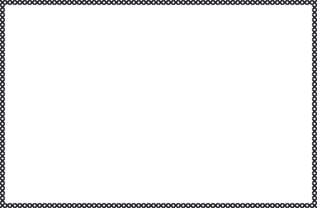
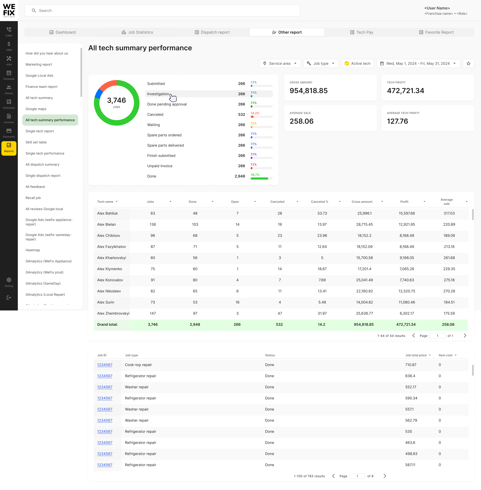
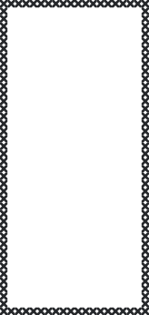
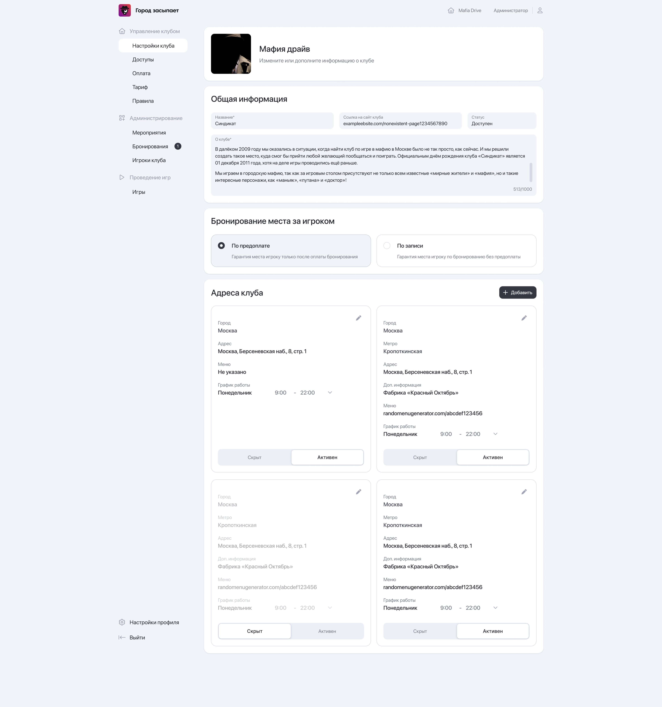
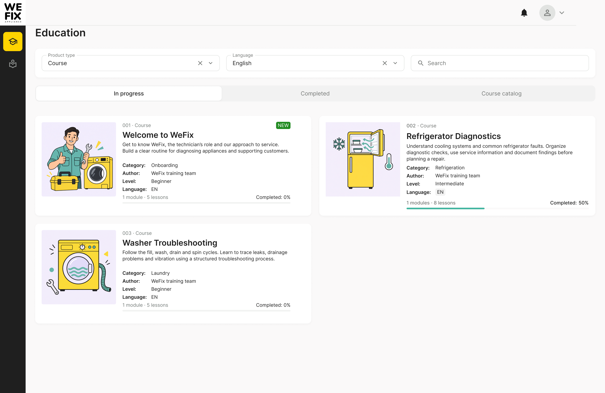

Hi, I’m Anastasia — a UX/UI designer with experience in graphic design. I turn complex workflows into clear interfaces that make everyday work easier.
Selected work


Business Phone Platform
Designing a standalone service for calls, messaging and call tracking.


Reports & Analytics
Dashboards and reports for understanding performance and exploring the details.



Field Service App
Helping technicians manage jobs, estimates, parts and payments on site.


Communication & CRM
Bringing calls, customer history and job creation into one workspace.


Mafia Club Management
Tools for managing club settings, bookings, payments and staff access.


Technician Training Platform
Course navigation, progress tracking and internal certification for technicians.